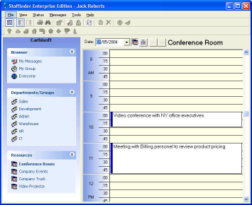
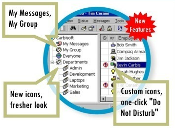

23 Jan 2004
23 Jan 2004
First Posted
 PopupMenu DLL - Create Unlimited Popup Menus
PopupMenu DLL - Create Unlimited Popup Menus
 vbAccelerator Toolbar and CoolMenu Control v3.5
vbAccelerator Toolbar and CoolMenu Control v3.5
 vbAccelerator Explorer Bar Control
vbAccelerator Explorer Bar Control
 vbAccelerator ImageList Control and Class v2.0
vbAccelerator ImageList Control and Class v2.0

StaffFinder
StaffFinder is a professional In/Out board application providing corporate directory, In/Out tracking and "whilst you were out" message functionality to businesses. Developed over the last four years, it has a polished, easy to use and informative user interface.
About StaffFinder
Staffinder is intended to help businesses gain back productivity lost when employees look for each other unsuccessfully. Many managers underestimate the amount of time wasted daily in this "hunting" ritual and would be shocked if they knew how many hours each month are lost. Staffinder is the right way to gain back this lost time. Corporate calendars and e-mail are often not fast enough, can be inconvenient and can lead to addition lost productivity. In StaffFinder, each employee's status is easily displayed in one location. Managers can see the location and status of their entire department in one glance.
StaffFinder 2000 Main Screen
Features of StaffFinder include:
- A user-interface designed around the Explorer model. Staffinder 2000 makes sense to new and veteran PC users within minutes. Right-clicking, property screens, movable toolbars, resizable columns and tray icons are all included.
- Easy adminstration. Each copy of StaffFinder includes an adminstrative module, with full password control.
- Customisation and options. Almost all aspects of the UI can be customised and there are many quick shortcuts, such as automatic 'In' status at startup and 'Out' at shutdown.
- "Whilst you were out" instant messaging. A perfect alternative to those post-its stuck to the phone...
- User-configurable groups allow quick display of In/Out status for any set of employees.
- Notify In feature: find out when people arrive at their desk.
Using vbAccelerator Code
StaffFinder uses vbAccelerator controls throughout the user interface for a modern look:
- SGrid control
- ImageList control
- Toolbar and CoolMenu Control
- PopupMenu DLL
- Date picker (currently only available at the old vbAccelerator site)
Version 3 of StaffFinder will also be using the ExplorerBar control.
Carbisoft and StaffFinder
Carbisoft's website, with full details about their StaffFinder product can be found here: